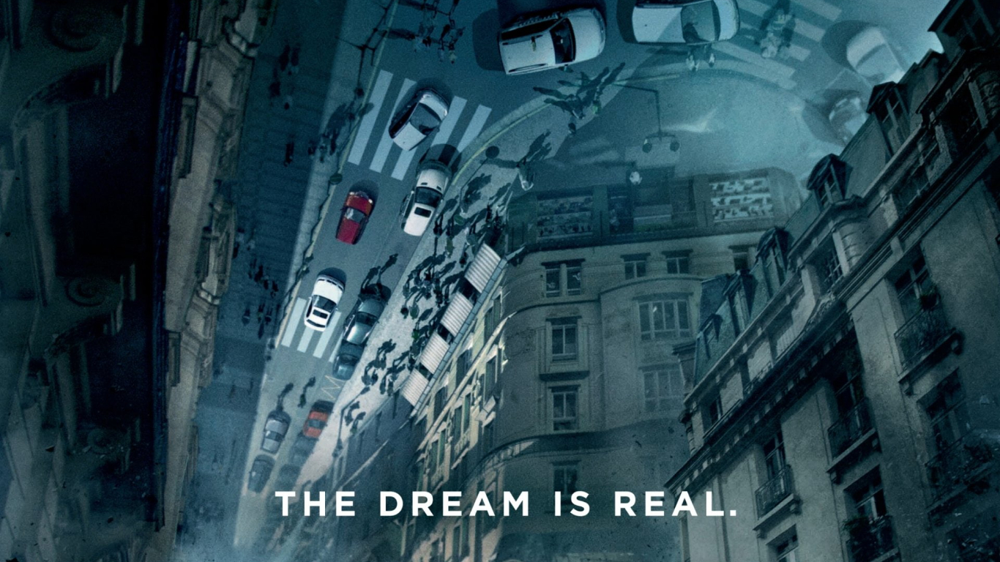
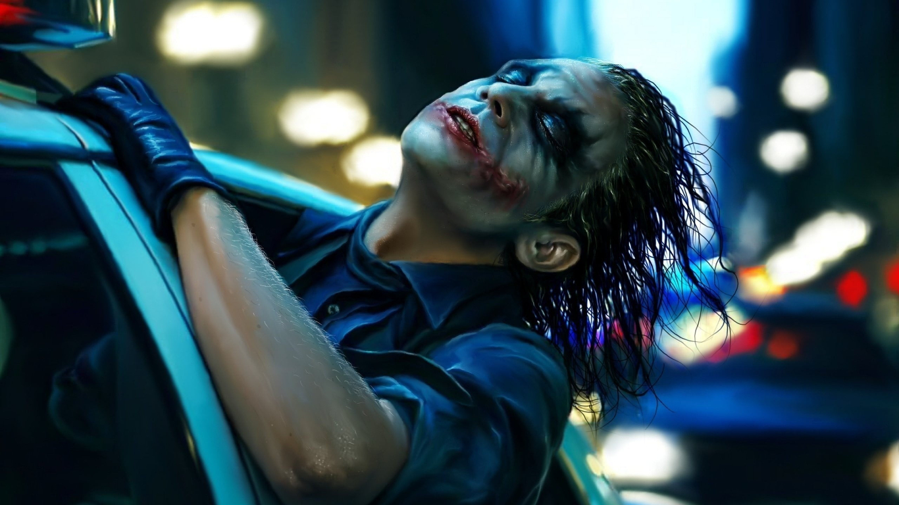
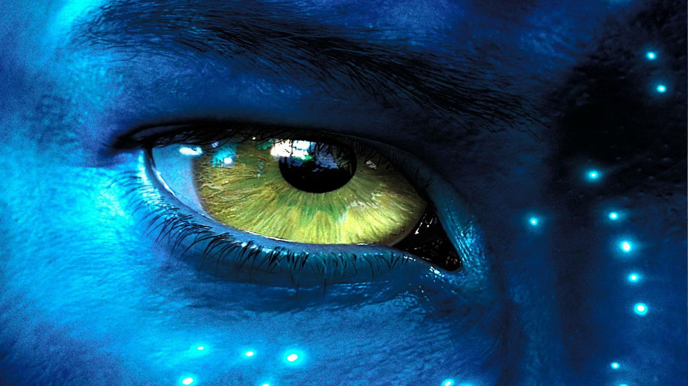
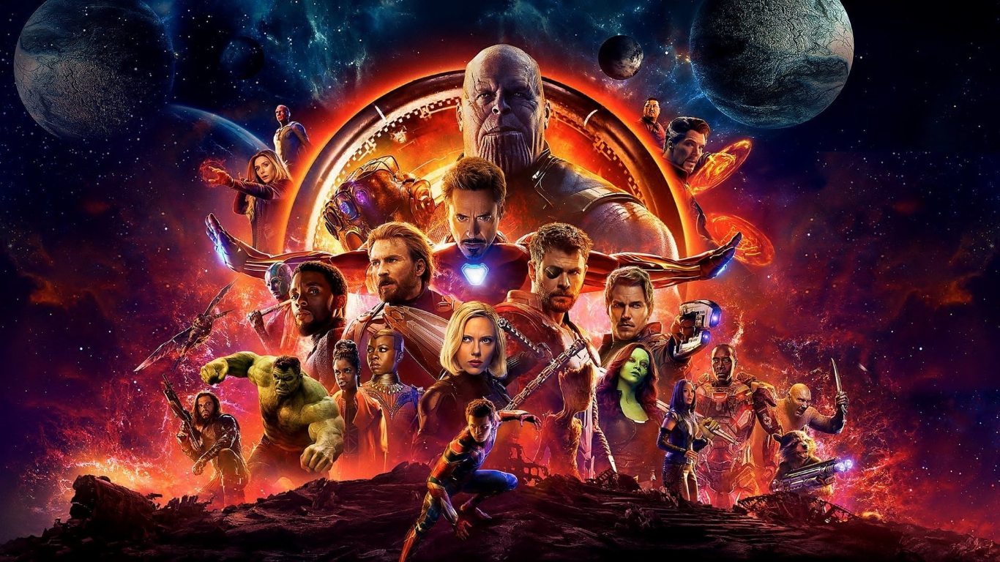
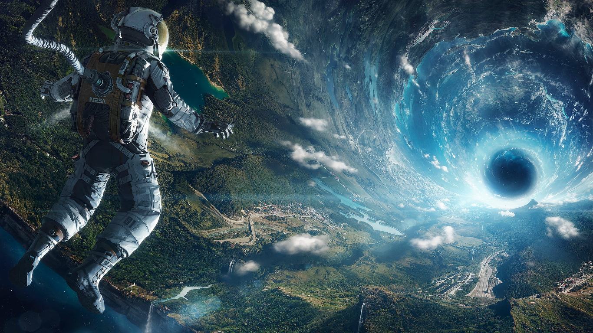
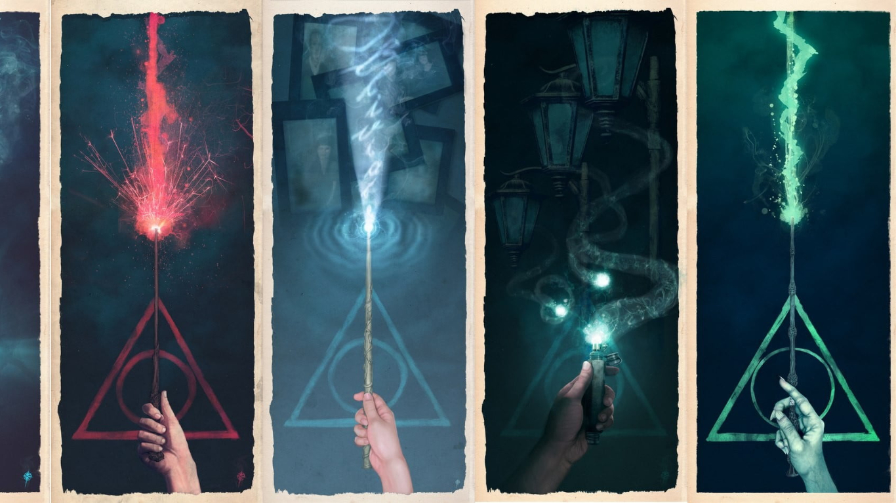
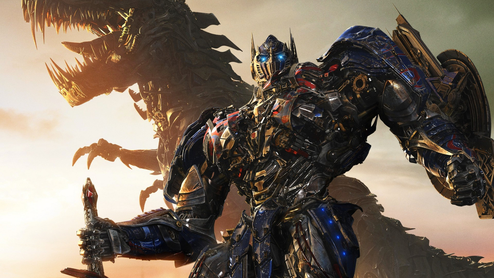
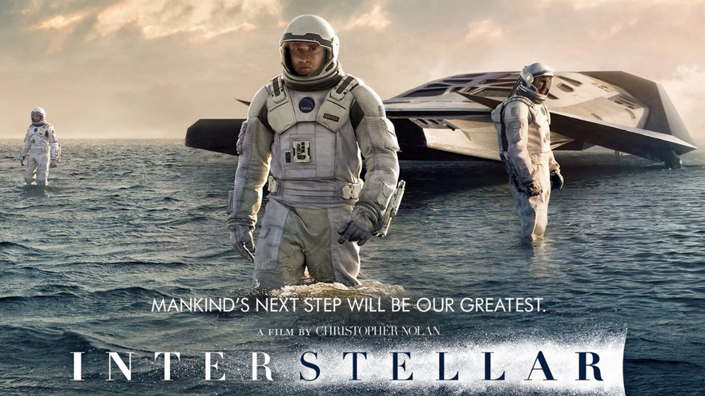
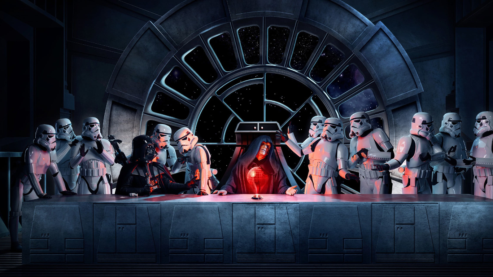
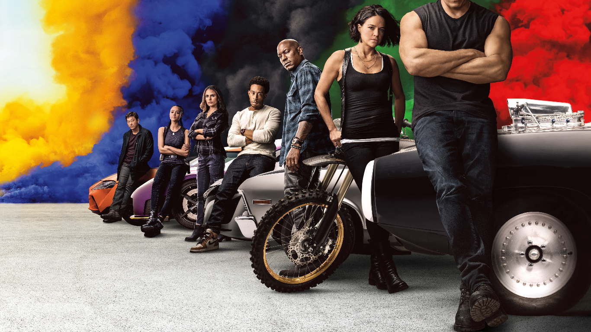

1. Inception

Dom Cobb is a skilled thief, the absolute best in the dangerous art of extraction, stealing valuable secrets from deep within the subconscious during the dream state, when the mind is at its most vulnerable. Cobb's rare ability has made him a coveted player in this treacherous new world of corporate espionage, but it has also made him an international fugitive and cost him everything he has ever loved. Now Cobb is being offered a chance at redemption. One last job could give him his life back but only if he can accomplish the impossible, inception. Instead of the perfect heist, Cobb and his team of specialists have to pull off the reverse: their task is not to steal an idea, but to plant one. If they succeed, it could be the perfect crime. But no amount of careful planning or expertise can prepare the team for the dangerous enemy that seems to predict their every move. An enemy that only Cobb could have seen coming.
2. The Dark knight

Set within a year after the events of Batman Begins (2005), Batman, Lieutenant James Gordon, and new District Attorney Harvey Dent successfully begin to round up the criminals that plague Gotham City, until a mysterious and sadistic criminal mastermind known only as "The Joker" appears in Gotham, creating a new wave of chaos. Batman's struggle against The Joker becomes deeply personal, forcing him to "confront everything he believes" and improve his technology to stop him. A love triangle develops between Bruce Wayne, Dent, and Rachel Dawes.
3. Avatar

When his brother is killed in a robbery, paraplegic Marine Jake Sully decides to take his place in a mission on the distant world of Pandora. There he learns of greedy corporate figurehead Parker Selfridge's intentions of driving off the native humanoid "Na'vi" in order to mine for the precious material scattered throughout their rich woodland. In exchange for the spinal surgery that will fix his legs, Jake gathers knowledge, of the Indigenous Race and their Culture, for the cooperating military unit spearheaded by gung-ho Colonel Quaritch, while simultaneously attempting to infiltrate the Na'vi people with the use of an "avatar" identity. While Jake begins to bond with the native tribe and quickly falls in love with the beautiful alien Neytiri, the restless Colonel moves forward with his ruthless extermination tactics, forcing the soldier to take a stand - and fight back in an epic battle for the fate of Pandora.
4. MCU Franchise

The Marvel Cinematic Universe (MCU) is an American media franchise and shared universe centered on a series of superhero films produced by Marvel Studios. The films are based on characters that appear in American comic books published by Marvel Comics. The franchise also includes television series, short films, digital series, and literature. The shared universe, much like the original Marvel Universe in comic books, was established by crossing over common plot elements, settings, cast, and characters.
The first MCU film is Iron Man (2008), which began the films of Phase One culminating in the crossover film The Avengers (2012). Phase Two began with Iron Man 3 (2013) and concluded with Ant-Man (2015). Phase Three began with Captain America: Civil War (2016) and concluded with Spider-Man: Far From Home (2019). The first three phases in the franchise are collectively known as "The Infinity Saga". The films of Phase Four began with Black Widow (2021).
Marvel Television expanded the universe to network television with Agents of S.H.I.E.L.D. on ABC in 2013, before further expanding to streaming television on Netflix and Hulu, and cable television on Freeform. They also produced the digital series Agents of S.H.I.E.L.D.: Slingshot. Marvel Studios began producing their own television series for streaming on Disney+, starting with WandaVision in 2021 as the beginning of Phase Four. The MCU also includes tie-in comics published by Marvel Comics, a series of direct-to-video short films called Marvel One-Shots, and a viral marketing campaign for the films featuring the faux news program WHIH Newsfront.
The franchise has been commercially successful and has generally received positive reviews. It has inspired other film and television studios to attempt to create similar shared universes with comic book character adaptations. The MCU has also inspired several themed attractions, an art exhibit, two television specials, guidebooks for each film, multiple tie-in video games, and commercials.
5. Gravity

Dr. Ryan Stone (Sandra Bullock) is a brilliant medical engineer on her first shuttle mission, with veteran astronaut Matt Kowalski (George Clooney) in command of his last flight before retiring. But on a seemingly routine spacewalk, disaster strikes. The shuttle is destroyed, leaving Stone and Kowalsky completely alone - tethered to nothing but each other and spiraling out into the blackness.
6. Harry Potter Series

Harry Potter is a film series based on the eponymous novels by J. K. Rowling. The series is distributed by Warner Bros. and consists of eight fantasy films, beginning with Harry Potter and the Philosopher's Stone (2001) and culminating with Harry Potter and the Deathly Hallows – Part 2 (2011). A spin-off prequel series that will consist of five films started with Fantastic Beasts and Where to Find Them (2016), marking the beginning of the Wizarding World shared media franchise.
The series was mainly produced by David Heyman, and stars Daniel Radcliffe, Rupert Grint, and Emma Watson as the three leading characters: Harry Potter, Ron Weasley, and Hermione Granger. Four directors worked on the series: Chris Columbus, Alfonso Cuarón, Mike Newell, and David Yates. Michael Goldenberg wrote the screenplay for Harry Potter and the Order of the Phoenix (2007), while the remaining films' screenplays were written by Steve Kloves. Production took place over ten years, with the main story arc following Harry's quest to overcome his arch-enemy Lord Voldemort.
Harry Potter and the Deathly Hallows, the seventh and final novel in the series, was adapted into two feature-length parts. Part 1 was released in November 2010, and Part 2 was released in July 2011.
Deathly Hallows – Part 1, Philosopher's Stone, and Deathly Hallows – Part 2 are among the 50 highest-grossing films of all time, and ranking them as the 48th-, 47th-, and 13th-highest-grossing films, with Philosopher's Stone and Deathly Hallows – Part 2 grossed over $1 billion. Without inflation adjustment, it is the third highest-grossing film series with $7.7 billion in worldwide receipts.
7. Transformer Franchise

Transformers is a series of American science fiction action films based on the Transformers franchise which began in the 1980s. Michael Bay has directed the first five films: Transformers (2007), Revenge of the Fallen (2009), Dark of the Moon (2011), Age of Extinction (2014), and The Last Knight (2017). A spin-off film, Bumblebee, directed by Travis Knight and produced by Bay, was released on December 21, 2018. A seventh film, Transformers: Rise of the Beasts, directed by Steven Caple Jr., and a sequel to Bumblebee, is scheduled to be released in 2022.
The series has been distributed by Paramount Pictures and DreamWorks Pictures. The original Transformers series has received negative to mixed reception, except for Bumblebee, which received positive reviews. It is the 13th-highest-grossing film series, with a total of $4.8 billion; two films in the series have grossed over $1 billion each.
8. Interstellar

Earth's future has been riddled by disasters, famines, and droughts. There is only one way to ensure mankind's survival: Interstellar travel. A newly discovered wormhole in the far reaches of our solar system allows a team of astronauts to go where no man has gone before, a planet that may have the right environment to sustain human life.
9. Star Wars Franchise

Star Wars is an American epic space opera multimedia franchise created by George Lucas, which began with the eponymous 1977 film and quickly became a worldwide pop-culture phenomenon. The franchise has been expanded into various films and other media, including television series, video games, novels, comic books, theme park attractions, and themed areas, comprising an all-encompassing fictional universe. In 2020, its total value was estimated at US$70 billion, and it is currently the fifth-highest-grossing media franchise of all time.
10. Fast & Furious franchise

Fast & Furious (also known as The Fast and the Furious) is a media franchise centered on a series of action films that are largely concerned with illegal street racing, heists, spies and family. The franchise also includes short films, a television series, live shows, video games, and theme park attractions. It is distributed by Universal Pictures.
The first film was released in 2001, which began the original tetralogy of films focused on illegal street racing, and culminated in the film Fast & Furious (2009). The series transitioned towards heists and spying with Fast Five (2011), and was followed by four sequels, with the most recent, F9, released in 2021. A tenth and eleventh film are planned, and the main films are collectively known as The Fast Saga.